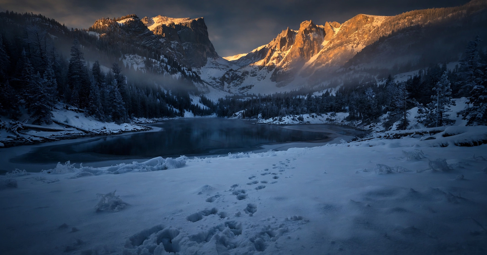

What the Mountains Taught Me About Surviving Film Production
By Shane Foster · October 15, 2026
The Easter eggs were hidden in holes in the snow. It was April, and there were four feet of snow on the ground. A story about growing up near Wishon Lake, and what it taught the man who founded this studio.